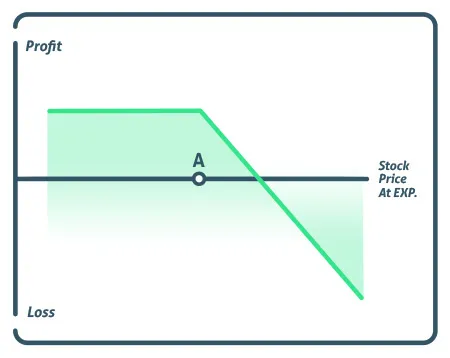

The short call option strategy, also known as uncovered or naked call, consist of selling a call without taking a position in the underlying stock. For those who are new to options, they should avoid the short call option as it is a high-risk strategy with limited profits. More advanced traders use a short call to profit from unique situations where they receive a premium for taking on risk. Let’s take a more in-depth look at the short call option strategy.

Investors open the short call strategy when the prediction for the underlying asset is bearish to neutral. Upon making the sale, the trader has an obligation to sell the stock at the strike price if the buyer of the short call exercises the option. This should not be confused with the short put option, where the seller has an obligation to buy the stock at the strike price. In the chart above, once the stock moves past strike price A, the trader starts to lose their profit. Once it moves past the strike price by more than the premium received, they start taking a loss.
With this strategy, it’s in the investor’s interest if the call option has no value at expiration, thus expiring worthless. When executing this option strategy, it’s a good practice to wait until the strike price is one standard deviation out of the money (the stock price is lower than the strike price). However, the strike price well negatively affect the premium received, the more risk, the higher the reward.
With a short call, the trader wants the implied volatility (IV) to decrease as this will reduce the price of the options they’re short. Here, if the investor decides to close the position before the expiration date, the trade will cost them less to buy back. Similarly, decreasing time to expiration is also a positive factor with this strategy because the less time to expiration, the lower the value of the call option, enabling the investor to close the position for less.
The short call is one of the two options strategies a trader can implement to make a bearish bet on the market. The other being buying put option contracts. The seller of a call option is betting that the stock will not go over a specified price (strike price) before the option expires in exchange for collecting a premium. This type of bear market trade is often placed when a stock has already had a big run to the upside, especially over a short period, and technical indicators, such as RSI or Percent-R, show that it’s overbought.
By selling a short call, the trader is obligated to the option’s buyer, thus guaranteeing that they will deliver the stock to the buyer of the call option if the stock goes over the strike price. If the price of the stock stays under the strike price, the short call option holder keeps the entire premium as profit. However, if the stock price rises above the strike price, the long call holder will exercise the option and force the short call holder to go out into the open market and buy the stock at the current market price delivering it to them at the lower price.
It is not uncommon for investors who already own stock to sell upside call options for additional income, known as a covered call. This way, if the stock does rise, the investor hands over the stock that’s already in their inventory.
Maximum Profit = Net Premium Received
The maximum loss for a short call strategy is unlimited, as the stock can continue to move higher with no limit.
The breakeven on a short call option is calculated by adding the premium to the strike price.
If a stock is trading $100 and an investor wants to sell a 110-strike price call for $2.00, then the breakeven would be $112.00.
If stock XYZ is trading $100 and the investor wants to sell a 110- strike price call option, they can collect a $2 premium to do so. If the stock trades up to $115, they will be forced to buy the stock at $115 and then deliver the stock to the call buyer at the price of $110, losing $5 in the process. But because the option seller received $2 when they sold the call, their net loss is $3.
If, however, the stock continues to trade down or never reaches $110, the trader keeps the $2 premium as profit.
The short call option is an excellent strategy for experienced investors who want to capitalize on selling volatility when markets are overbought. As time moves on, the premium received decays, allowing investors to either keep the whole premium or repurchase it later for a lower price. Beginning traders should not use this strategy, it is far too dangerous as the maximum loss is unlimited.
Besides individual stocks, sometimes investors also like to sell call index options. A reason for trading index options is because they are considered to be less volatile compared to individual stocks.
The potential for profit with this strategy is low due to the unlimited risk involved if the stock continues to rise. Traders prefer to sell calls because the possibility of profiting from it is high if the option is very out of the money and the trade is timed correctly.
As an alternative, if an investor is expecting a stock to trade back down, they should consider a bear call spread. This gives the investor the ability to profit by selling premium, but allows them to their losses if they’re wrong in their analysis.